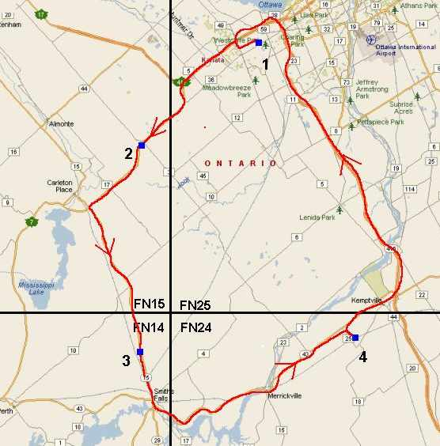
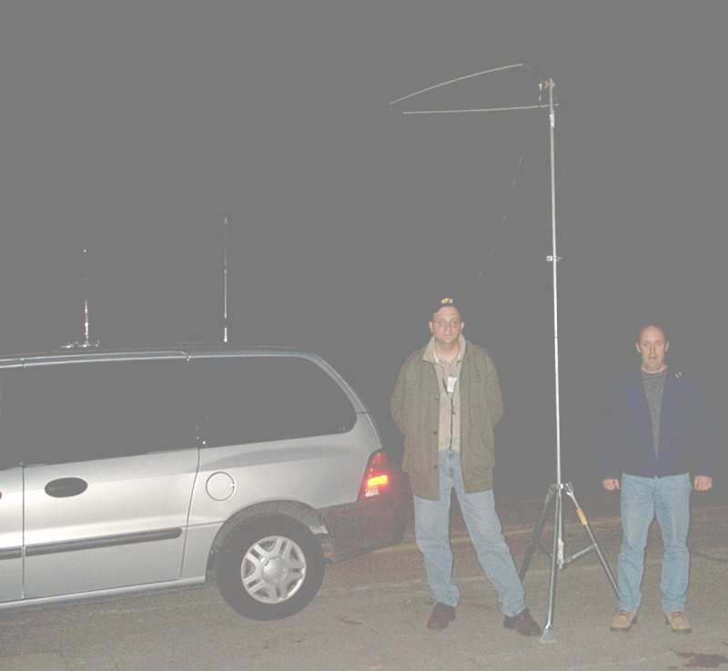

West Carleton Amateur Radio Club
West Carleton Amateur Radio Club
50Mhz sprint 23 October, 2004 - VA3NFA/VE3XZT Rover
Dale, VE3XZT, and I (VA3NFA) had a BLAST during this contest!
We operated as a Rover and activated FN25, FN15, FN14 and FN24 during the short 4 hour contest. We were
able to work many of the local "big guns" and even
work some DX during the short E's that surprised us during the contest.
Here is a map of our route:

We found an EXCELLENT operating position in FN14, at
the site of an old Bell tower (ed note: Numagate?) that is no longer used. Also, Brad, VE3BSM, found a great location for us to operate from FN24. Thanks Brad!
Here are our "unofficial" results:
From FN25 - 6 QSO's / Grids: FN15, FN25
From FN15 - 4 QSO's / Grids: FN15, FN25
From FN14 - 6 QSO's / Grids: EL96, EM60, EM70, FN15, FN24, FN25
From FN24 - 6 QSO's / Grids: EM60, FN15, FN24, FN25
Total QSO's: 22 / Total Grids: 14
Claimed Score: 308
We drove a little over 230Kms to work these grids,
thus we only had about 20 minutes "parked" at each
location.
Our station was a FT-857 running at about 75 watts.
While mobile we used a 6m hamstick on the van, and
while parked we setup a Par Omni Loop on a 10' mast
supported with a small tripod. We drank Tim Horton's
coffee and had a variety of Timbits.
As this contest is "rule light" we used APRS and 70cm
to setup scheds before and during the contest.
Here is a pic of the happy rovers and setup:

Thanks again for all the contacts. I think Dale and I
have caught the "rover bug"!!!
Hmmmmm... "VA3NFA Psycho Rover" for the June VHF
Contest......
73. Tom (VA3NFA) Kanata, Ontario
 Back
to WCARC Home Page
Back
to WCARC Home Page
This page was updated on November 2nd, 2004 and is Copyright ©
2004-2011 by West Carleton Amateur Radio Club